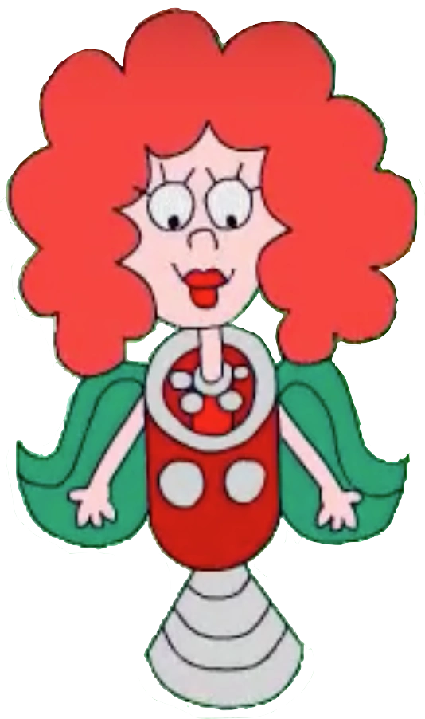

They say our solar system is centered 'round the sun, Nine planets, large and small, parading by. But somewhere out in space, There's another shining face That you might see some night up in the sky. Interplanet Janet, she's a galaxy girl, A solar system Ms. from a future world, She travels like a rocket with her comet team And there's never been a planet Janet hasn't seen, No, there's never been a planet Janet hasn't seen.
She's been to the Sun, it's a lot of fun, It's a hot-spot, It's a gas! Hydrogen and helium in a big, bright, glowing mass. It's a star, it's a star! So Janet got an autograph!
Mercury was near the Sun so Janet stopped by, But the mercury on Mercury was much too high, so Janet split for Venus but on Venus she found She couldn't see a thing for all the clouds around. Earth looked exciting, kind of green and inviting, So Janet thought she'd give it a go. But the creatures on that planet looked so very weird to Janet, She didn't even dare to say hello.
It's a bird, it's a plane! Why, it must be a UFO, but it was: Interplanet Janet, she's a galaxy girl, A solar system Ms. from a future world, She travels like a rocket with her comet team And there's never been a planet Janet hasn't seen, No, there's never been a planet Janet hasn't seen. Mars is red and Jupiter's big And Saturn shows off its rings. Uranus is built on a funny tilt And Neptune is its twin, And Pluto, little Pluto, is the farthest planet from the Sun.
They say our solar system is not alone in space. The Universe has endless mystery. Some future astronaut May find out that what he'd thought Was a shooting star instead turned out to be... Interplanet Janet, she's a galaxy girl, A solar system Ms. from a future world, She travels like a rocket with her comet team And there's never been a planet Janet hasn't seen, No, there's never been a planet Janet hasn't seen.
Source: Interplanet Janet - Schoolhouse Rock, 1978
More about Schoolhouse Rock